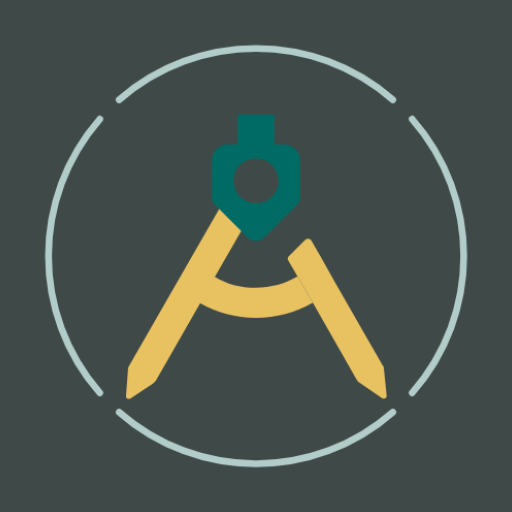

Designer Tools Pro
Check every pixel against the spec.
Lay grids, mockups, and a color picker over any app on your phone. Even with redlines in hand, it's the quickest way to verify a build.
#006A64
Three tools, one floating panel
- Grid overlay
- Toggle an on-screen grid to catch uneven spacing and misaligned elements. Set the grid size and the line and keyline colors.
- Mockup overlay
- Show a design mockup over your app and tune its opacity to compare the two. Portrait or landscape, with adjustable position.
- Color picker
- Drag a magnifier loupe to read the hex code of any pixel. Tap the code to copy it.
- Works over any app
- A floating panel lets you switch tools without leaving the app you're checking.
Your screen stays yours
Designer Tools Pro uses the Accessibility service only to show its floating panel.
- No data is collected or shared through the Accessibility service.
- No data is shared with third parties.
- Mockup images are saved on your device.
- All connections are encrypted.